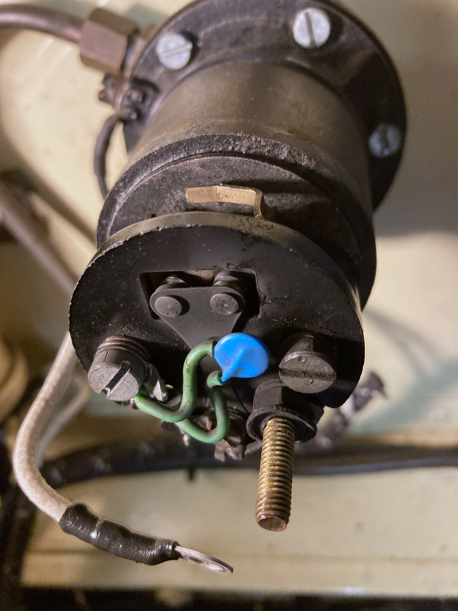
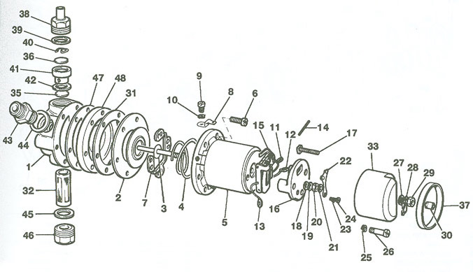

How It Started
In January 2023, after TC4985 had been in the garage since October, I went out to give it a run. As soon as I turned on the ignition I knew that something was wrong. There was no ticking from the fuel pump! Although I have no receipt for a new fuel pump, I assumed that it was replaced during the 2010-12 period when the major restoration was done. So the pump would be just over ten years old, but installed only 5,000 miles ago.
At first I thought that it might be due to the outside temperature, which was below zero at night and no more that 3°C during the day. However, members of the mg-tabc group dismissed this theory and said that it was more likely to be due to corrosion of the points during the damp winter months. So I firstly removed the top cover and tried to clean the points with some fine emery paper. That had no effect. So I checked for continuity of the coil; which was fine, and then removed the blade (item 22 in the exploded diagram below) and gave that a more vigorous clean of the contact on the blade and the contact on the rocker mechanism (item 15). Still no joy. As you can see in the photo, there was a device mounted across the points to help prevent sparking and thus pitting.
Other mg-tabc members suggested that the problem could be due to a stiff diaphragm (item 2) and Peter Cole, in Aldwick, near Bognor, offered to put my pump on his test rig.
The Fix
So I removed the fuel pump and took it over to Peter's. He put power on it and agreed that it was not working. He then stripped it down, removing the blade (22), the rocker mechanism (15) and the diaphragm (2). The latter had a thin plastic film laying over the rubber disc, apparently as an initial attempt to counter the effect of ethanol in petrol.
Peter had all the necessary parts and so fitted a new, ethanol resistant diaphragm (with new gaskets; parts 31 and 47), new rocker and blade. He also fitted a new filter (32). The six housing screws (6) need to be tightened periodically to allow for compression of the diaphragm. He also fitted the transil that I had bought from the Octagon club. It transpired that he makes them for the club! This should lengthen the life of the points.
Having re-assembled the pump, Peter put it on his test rig, where he pumps parafin up to the appropriate height and tests the flow rate. All was well.
After refitting the pump into TC4985 I also fitted a new fuel pipe between the carburettors. It is braided and initially I didn't realise that the banjo on the front end was 'sided'. So fuel dripped out! Having turned it around, applied some thread lock to the banjo bolt and used Hylomar Blue on both sides of the two fiber washers, it seems to be fuel-tight. And the pump seems to be more 'spritely' than before.